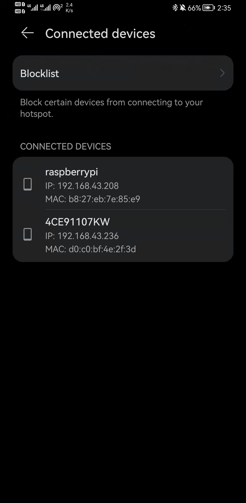
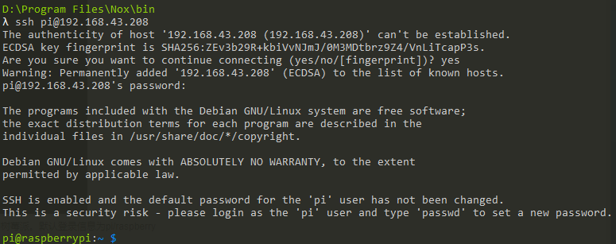
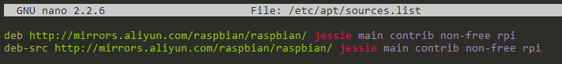
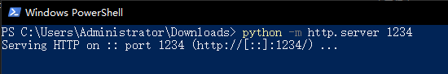
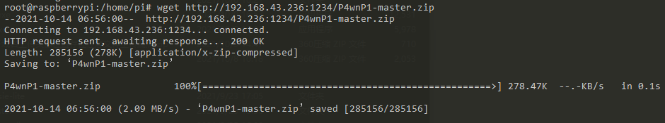
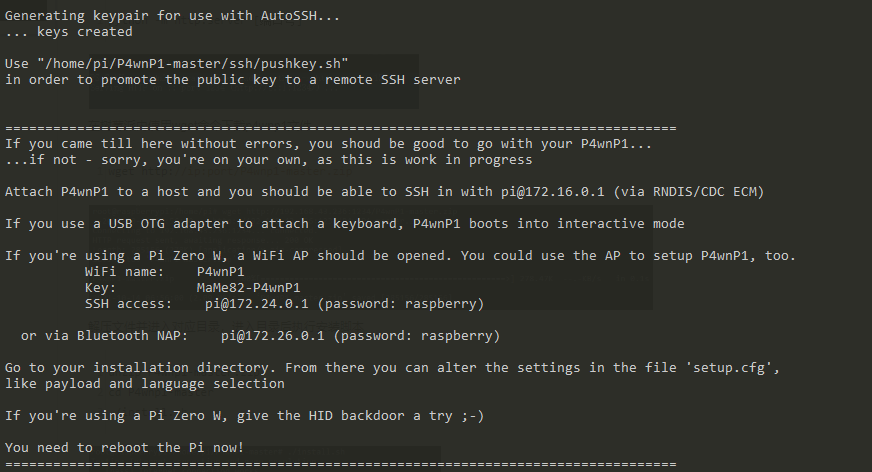

P4wnp1环境配置
本文所述的一切技术仅供网络安全研究学习之用，请勿用于任何的违法用途，否则由此所产生的一切后果自负！
准备工作：
- 烧录软件（此处推荐balenaEtcher）
- 读卡器（能读TF卡就行）
- 树莓派镜像（因为各种原因导致很多版本都存在bug，经过测试选用了稳定版本raspbian jessie，2017-07-05-raspbian-jessie-lite.img）下载渠道为官方
- 树莓派zero w
准备完成之后首先烧录系统，忘记截图了，凑合着看就行。烧录系统完成后将两个文件放到boot盘中，以启用SSH和WiFi自动连接 1.完全空的ssh文件（无后缀无内容，只需文件名为ssh即可） 2.wpa_supplicant.conf 内容如下：
network={
ssid="WiFi_name" //此处填写WiFi名称
psk="password" //此处填写WiFi密码
key_mgmt=WPA-PSK //此处填写加密方式
priority=1
scan_ssid=1
}
完成后将系统卡插入树莓派，给树莓派上电。等待连接，WiFi尽量选择自己能控制的，比如手机热点，可以直接看到连接情况，便于直接获取树莓派IP地址。

连接完成后通过ssh访问树莓派。默认登录信息为pi/raspberry

接下来要做的事是切换系统软件更新源 首先提升到管理员权限方便操作
sudo su

接下来更新软件源
apt-get update

安装相关命令
apt-get install git john
完成后下载P4wnp1仓库， 可以直接去下载后通过SSH传入，也可以直接git clone命令,由于国内下载较慢，所以直接下载，在本机上开启python HTTP服务器
python -m http.server [端口号]

在树莓派内使用wget命令下载p4wnp1文件
wget http://ip:port/P4wnp1-master.zip

解压文件并进入对应目录，进入目录后执行安装脚本
unzip P4wnp1-master.zip<div><br/></div>cd P4wnp1-master<div><br/></div>./install.sh

经过一番漫长的等待，中间会有几次卡住需要手动按回车，之后出现如下页面说明安装成功

记录下WiFi和SSH密码
WiFi name: P4wnP1
Key: MaMe82-P4wnP1
SSH access: pi@172.24.0.1 (password: raspberry)
将树莓派重启后就可以使用P4wnp1了（需要插在被攻击电脑上）
连接上以后使用刚刚的SSH密码登录P4wnp1进行攻击了。（如果长期不使用，由于储存的关系可能导致系统出现问题，可能需要重新配置P4wnp1环境，配置步骤如上所示）
关于使用可以参考官方git仓库